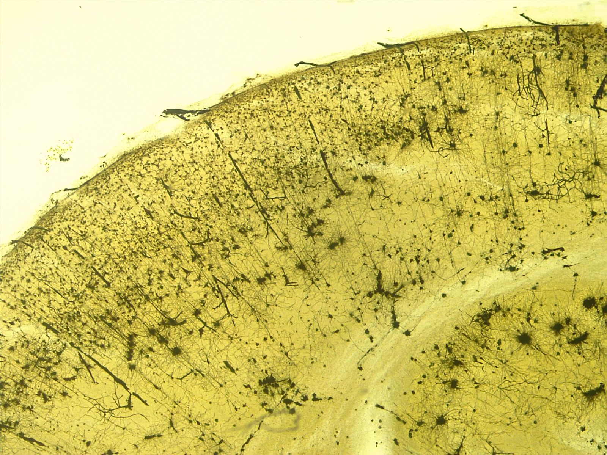

頭痛之外
吳旻陽 醫師・神經內科

神經內科醫師吳旻陽的隨筆。頭痛只是門診的開場白，後面還有更長的故事。
吳旻陽 醫師
這篇是給自己看的速查表，示範 Markdown 在這個網站上會長成什麼樣子，順便測試窄螢幕不破框。
吳旻陽 醫師 發布 2026年7月28日 更新 2026年8月2日
門診裡最常聽到的主訴是頭痛，但真正花掉時間的，往往是頭痛以外的那些事。
吳旻陽 醫師 發布 2026年8月2日